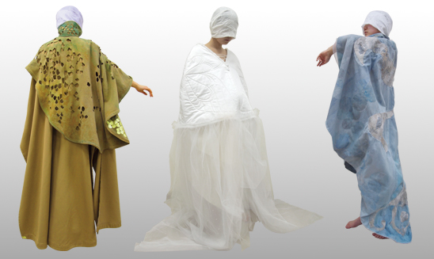
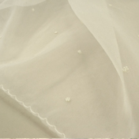
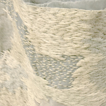
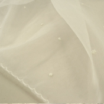
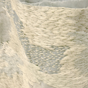
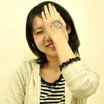

人が纏うことを前提とした布の表情を表現した作品
|
竜騎士 布 糸 アルミ板 アクリル |
妖精姫様色 布 糸 ビーズ 染料等 |
魔法の司 布、糸、アクリル等 |
 

幼い頃に聞いて育った「お伽話と神話」。それはとても私に近いもの。
でも、ひどく非現実的で、同時にひどく憧れる。
子供っぽいと、夢見がちと笑われたってこれが私。
キラキラ、サラサラ、ドロドロ…様々な登場人物が織り成す物語を
私も表現したいと思った。

古澤 亜澄
Furusawa Asumi
1989年4月 岩手県紫波郡紫波町生まれ